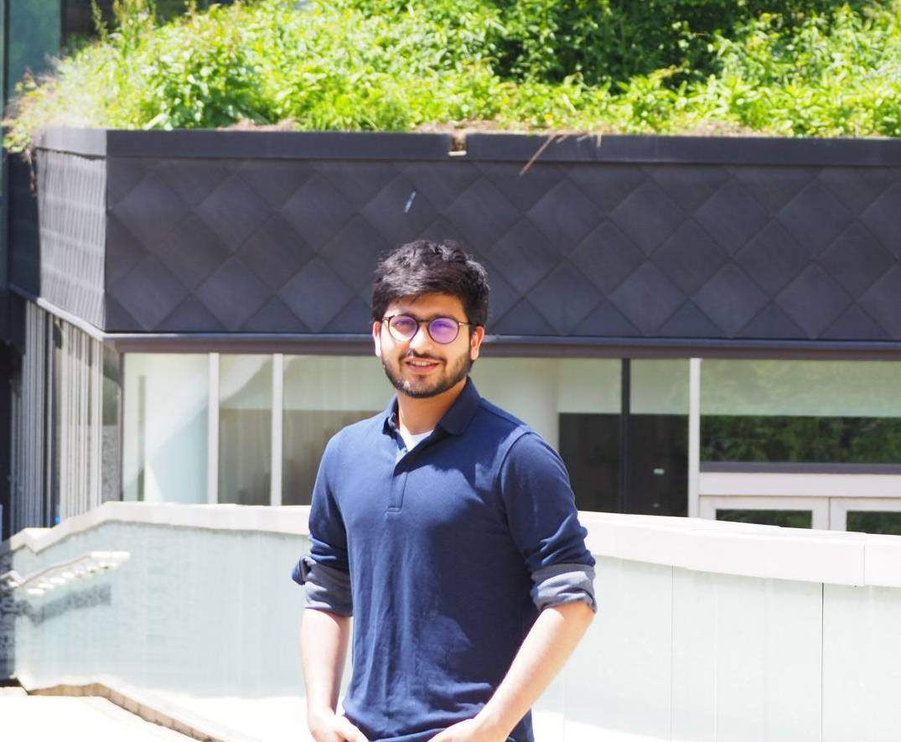

|

|
Ainesh Bakshi
Email: ainesh (at) mit (dot) edu
Office: 2-174
|
I am currently a postdoc in the Computer Science and Mathematics departments at MIT, where I collaborate closely with Ankur Moitra and Sam Hopkins. I am broadly interested in Theoretical Computer Science and Quantum Information. My main research thread revolves around using the algorithmic toolkit, consisting of iterative methods and convex relaxations, to understand quantum systems. I am also interested in applying this toolkit to high-dimensional statistics, metric embedding and numerical linear algebra problems.
I finished my PhD at Carnegie Mellon University, where I was extremely fortunate to be co-advised by Pravesh Kothari and David Woodruff. During the summer of 2021, I interned with Madhur Tulsiani and Yury Makarychev at Toyota Technological Institute-Chicago and in summer 2020, I interned with Ken Clarkson at IBM Almaden.
Publications
-
Metric Embeddings Beyond Bi-Lipschitz Distortion via Sherali-Adams
Ainesh Bakshi, Vincent Cohen-Addad, Samuel B. Hopkins, Rajesh Jayaram, Silvio Lattanzi
COLT 2025
[arXiv].
-
Sample-Optimal Private Regression in Polynomial Time
Prashanti Anderson, Ainesh Bakshi, Mahbod Majid, Stefan Tiegel
STOC 2025
[arXiv].
-
Learning the Closest Product State
Ainesh Bakshi, John Bostanci, William Kretschmer, Zeph Landau, Jerry Li, Allen Liu, Ryan O'Donnell, Ewin Tang
QIP 2025 (Short Plenary Talk)
STOC 2025
[arXiv].
-
High-Temperature Gibbs States are Unentangled and Efficiently Preparable
Ainesh Bakshi, Allen Liu, Ankur Moitra, Ewin Tang
QIP 2025 (Invited Plenary Talk)
FOCS 2024
[arXiv] [Quanta magazine] [Wired magazine].
-
Efficient Certificates of Anti-Concentration Beyond Gaussians
Ainesh Bakshi, Pravesh Kothari, Goutham Rajendran, Madhur Tulsiani, Aravindan Vijayaraghavan
FOCS 2024
[arXiv].
-
Structure learning of Hamiltonians from real-time evolution
Ainesh Bakshi, Allen Liu, Ankur Moitra, Ewin Tang
QIP 2025
FOCS 2024
[arXiv].
-
Learning Quantum Hamiltonians at any Temperature in Polynomial Time
Ainesh Bakshi, Allen Liu, Ankur Moitra, Ewin Tang
QIP 2024 (Invited Plenary Talk and Best Student Paper)
STOC 2024 (Invited to SICOMP Special Issue)
[arXiv] [Quanta magazine].
-
An Improved Classical Singular Value Transform for Quantum Machine Learning
Ainesh Bakshi, Ewin Tang
SODA 2024 [arXiv].
-
A Near-Linear Time Algorithm for the Chamfer Distance
Ainesh Bakshi, Piotr Indyk, Rajesh Jayaram, Sandeep Silwal, Erik Waingarten
NeurIPS 2023 [arXiv].
-
Krylov Methods are (nearly) Optimal for Low-Rank Approximation
Ainesh Bakshi, Shyam Narayanan
FOCS 2023 [arXiv].
-
Tensor Decompositions Meet Control Theory:
Learning General Mixtures of Linear Dynamical Systems
Ainesh Bakshi, Allen Liu, Ankur Moitra, Morris Yau
ICML 2023 [arXiv].
-
A New Approach to Learning a Linear Dynamical System
Ainesh Bakshi, Allen Liu, Ankur Moitra, Morris Yau
STOC 2023 [arXiv].
-
Sub-Quadratic Algorithms for Kernel Matrices via Kernel Density Estimation
Ainesh Bakshi, Piotr Indyk, Praneeth Kacham, Sandeep Silwal, Samson Zhou
ICLR 2023 (Spotlight Talk) [arXiv].
-
Low-Rank Approximation with 1/epsilon^(1/3) Matrix-Vector Products
Ainesh Bakshi, Ken Clarkson, David Woodruff
STOC 2022 [arXiv].
-
Robustly Learning Mixtures of k Arbitrary Gaussians
Ainesh Bakshi, Ilias Diakonikolas, He Jia, Daniel Kane, Pravesh Kothari, Santosh Vempala
STOC 2022 [arXiv].
-
Robust Linear Regression: Optimal Rates in Polynomial Time
Ainesh Bakshi, Adarsh Prasad
STOC 2021 [arXiv].
-
Learning a Latent Simplex in Input Sparsity Time
Ainesh Bakshi, Chiranjib Bhattacharyya, Ravi Kannan, David Woodruff, Samson Zhou
ICLR 2021 (Spotlight Talk) [arXiv].
-
List-Decodable Subspace Recovery: Dimension Independent Error in Polynomial Time
Ainesh Bakshi, Pravesh Kothari
SODA 2021 [arXiv].
-
Testing Positive Semi-Definiteness via Random Submatrices
Ainesh Bakshi, Nadiia Chepurko, Rajesh Jayaram
FOCS 2020 [arXiv].
-
Outlier-Robust Clustering of Non-spherical Mixtures
Ainesh Bakshi, Pravesh Kothari
FOCS 2020 [arXiv]
Conference version to be merged with this paper.
-
Robust and Sample Optimal Algorithms for PSD Low Rank Approximation
Ainesh Bakshi, Nadiia Chepurko, David Woodruff
FOCS 2020 [arXiv].
-
Weighted Maximum Independent Set of Geometric Objects in Turnstile Streams
Ainesh Bakshi, Nadiia Chepurko, David Woodruff
APPROX 2020 [arXiv].
-
Robust Communication-Optimal Distributed Clustering Algorithms
Pranjal Awasthi, Ainesh Bakshi, Nina Balcan, Colin White, David Woodruff
ICALP 2019 [arXiv].
-
Learning Two Layer Rectified Neural Networks in Polynomial Time
Ainesh Bakshi, Rajesh Jayaram, David Woodruff
COLT 2019 [arXiv].
-
Sublinear Time Low-Rank Approximation of Distance Matrices
Ainesh Bakshi, David Woodruff
NeurIPS 2018 (Spotlight Talk) [arXiv].
Dissertation
Undergraduate Work
-
File Systems fated for Senescence? Nonsense, Says Science!
A. Conway,
A. Bakshi,
Y. Jiao,
Y. Zhan,
M. Bender,
W. Jannen,
R. Johnson,
B. Kuzmaul,
D. Porter,
J. Yuan,
M. Farach-Colton
FAST '17 [pdf].
Teaching and Service